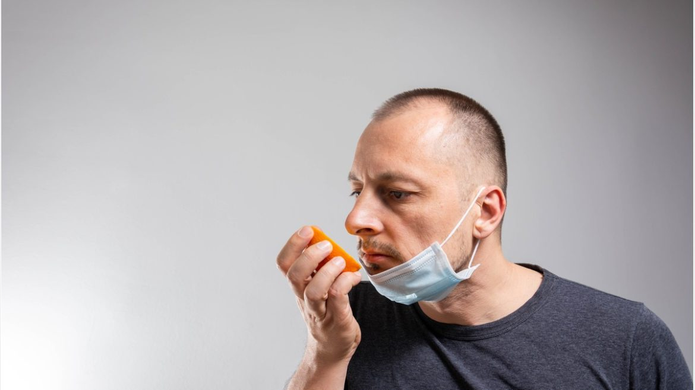
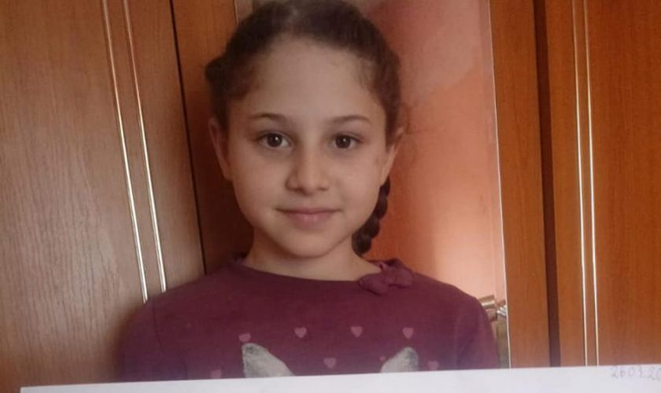

-
Ştiri
IMPACT
Monica Pop pune la zid autoritățile din România. Ce pățesc
cetățenii după vaccinare: "Este crima perfectă"Monica Pop face acuzații grave cu privire la tragediile care apar după vaccinare. Aceasta cere
Organizației Mondiale a Sănătății să analizeze cu mare atenție toate decesele care apar la o... -
Anunţ
Automobile Bavaria
BavariaOnline. Rezervă online mașina dorită!Cele mai bune oferte pentru mașini premium și de volum, noi sau demo. Buy-back, leasing.
Vezi stoc Germania și România. -

Ştiri
PLAYTECH.ro
Pierderea mirosului, o veste bună pentru pacienții bolnavi de
Covid-19: concluziile cercetătorilorPână acum, pierderea mirosului a fost percepută doar ca o simptomă timpurie pe care o are o
persoană bolnavă de coronavirus. Se pare însă că funcționează și ca confirmare a faptului c -
Ştiri
www.digi24.ro
Fostul deținut politic Octav Bjoza, demis din Guvern. Florin Cîțu:
A pus pe umerii comunităţii evreieşti aducerea comunismuluiOctav Bjoza, fost deținut politic și președintele AFDPR (Asociația Foștilor Deținuți Politici și
Victime ale Dictaturii din România) a fost demis luni din funcția de subsecretarul de stat, dup... -

Ştiri
IMPACT
Tragedie în Bistrița-Năsăud. O fetiță de nouă ani a murit
fulgerător după ce s-a îmbolnăvit de Covid-19. Ce au descoperi...rimarul din Tiha Bârgăului a explicat pentru bistriteanul.ro că micuța ar fi murit după ce s-a
înecat cu vomă, potirivit medicilor legiști. Aceștia au descoperit, de asemenea, că Georgiana...
Cluj-Napoca
Astăzi

5°
1°
Mie

4°
1°
Joi
6°
1°
Vin
6°
-2°
- Ajutor
- Feedback
- Confidențialitate (Actualizată)
- Condiții (Actualizate)